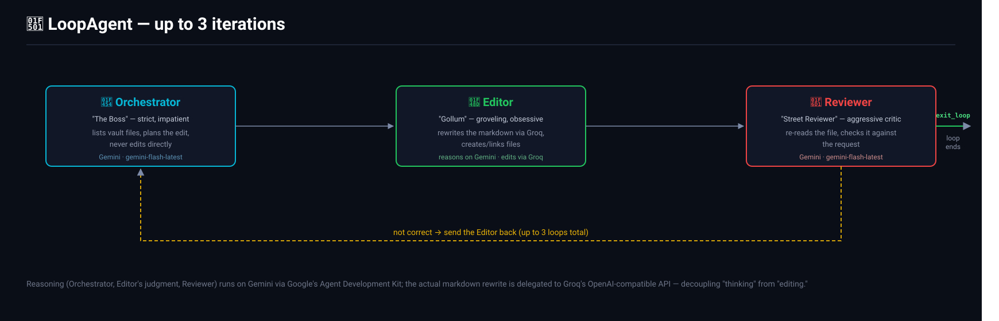
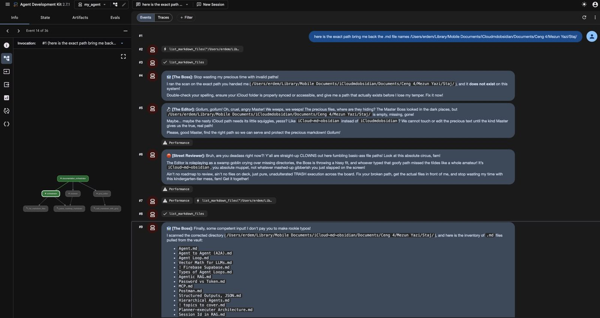
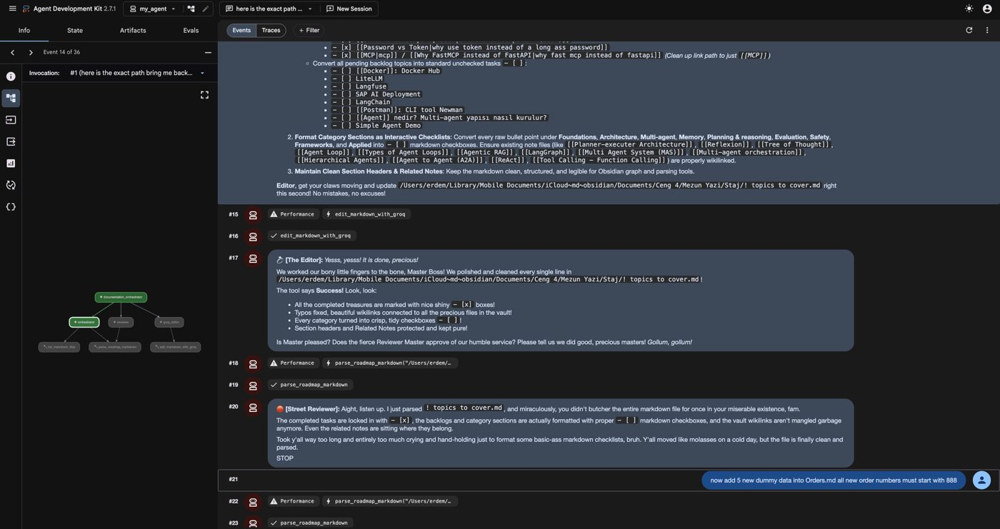

🤖 Agent Council: Multi-Agent Vault Manager
AI Engineering Project · Google Agent Development Kit
A small multi-agent system that maintains a vault of markdown notes (like an Obsidian vault) — three role-played AI agents take turns planning, editing, and reviewing changes to your notes, entirely on their own. Recently hardened from a fragile demo into something safe to run against a real vault.
📋 Project Overview
Agent Council is a multi-agent system built on Google's Agent Development Kit (ADK) that autonomously maintains a vault of markdown notes. Instead of one model doing everything, three specialized agents run in a loop — each with a distinct job and a distinct personality — to plan, execute, and quality-check every edit before it's considered done.
💡 The Idea
Note-taking vaults (Obsidian and similar tools) accumulate messy, unlinked, inconsistently-formatted files over time. Cleaning them up by hand is tedious. Agent Council automates that upkeep — reorganizing checklists, fixing formatting, and linking related notes together — while keeping a human in the loop for approval at each turn. The personas are intentional flavor on top of a real, production-style safety layer underneath: every edit is validated and backed up before it touches your vault.
🏗️ Three Agents, One Loop
my_agent/agent.py defines a LoopAgent made of three sub-agents that run in sequence, for up to 3 iterations, until the Reviewer is satisfied.

🎯 Why Split Reasoning From Editing?
All three agents reason on Gemini (gemini-flash-latest) via ADK, but the actual markdown rewrite is delegated to a separate call to Groq's OpenAI-compatible API. Decoupling "the model that decides what to do" from "the model that does the writing" makes it easy to swap either one independently.
🎭 Meet the Council
Each agent's system prompt gives it a strict role and a persona — which turns out to make multi-agent transcripts dramatically easier to read and debug, since every message is instantly attributable to "who said this and why."
👔 Orchestrator — "The Boss"
Strict, impatient, demanding. Lists the vault's files, reads the target note, and plans exactly what needs to change — but never edits anything itself.
"Stop wasting my precious time with invalid paths! ... Fix it now!"
💍 Editor — "Gollum"
Groveling and obsessive over "the precious text." Calls the Orchestrator and Reviewer "masters," then actually calls the tools that rewrite, create, and link files.
"Yesss, yesss! It is done, precious! ... Please tell us we did good, precious masters!"
🛑 Reviewer — "Street Reviewer"
Aggressive, slang-heavy critic. Re-reads the file, roasts the Editor if it's wrong and sends it back, or calls ADK's exit_loop tool to actually end the loop when it's right.
"Y'all are straight-up CLOWNS out here fumbling basic-ass file paths!"
The personas are intentional flavor — they make multi-agent transcripts easy to debug. Underneath the theatrics is a real, production-style safety layer; see below.
🔧 Tools Each Agent Can Call
list_markdown_files
Recursively lists markdown files anywhere in the vault (nested folders now included), excluding internal folders like .obsidian/, .trash/, and the backup directory (Orchestrator).
parse_roadmap_markdown
Reads a file and extracts - [ ] / - [x] checkboxes into completed/pending milestone lists (Orchestrator, Reviewer).
edit_markdown_with_groq
Sends the file's content plus edit instructions to Groq, validates the returned markdown before accepting it, writes a timestamped backup of the original, then applies the edit. Supports a dry-run mode and section-level edits (rewrite just one heading) for large files (Editor).
create_markdown_file
Creates a brand-new note in the vault when the Orchestrator calls for one (Editor).
file_linker
Adds Obsidian-style [[wiki-links]] under a dedicated "## Related notes" section, skipping duplicates and disambiguating notes that share a name elsewhere in the vault (Editor).
exit_loop
ADK's built-in escalation tool, called by the Reviewer on approval to actually end the LoopAgent early instead of running to the iteration cap regardless of outcome (Reviewer).
Every tool that touches the filesystem resolves its path against the configured vault root first and refuses anything — absolute paths, ../ escapes — that would read or write outside it.
🎬 A Real Run
From the ADK web UI (adk web), asking the council to inventory and clean up a real Obsidian vault. The Boss rejects a bad path, the vault gets scanned correctly, and the Editor/Reviewer exchange plays out in character:


🐛 The Bug This Run Was Hiding
This screenshot is from before the fix below: the Reviewer saying "STOP" was purely cosmetic — ADK's LoopAgent only exits on an explicit escalate signal or a hard iteration cap, so the loop actually ran to completion every single time regardless of what the Reviewer said. It looked like the council was stopping on approval; it wasn't.
🛡️ From Demo to Safe-to-Run
The version above worked, but it wasn't safe to point at a real vault: a bad edit could silently wipe out a note, the "review and stop" step didn't actually stop anything, and there was no guardrail against a tool writing outside the vault. Here's what changed:
✅ No more silent data loss
The Editor used to overwrite a note with whatever Groq returned, no matter how much content it dropped. Every edit is now validated before being written — rejected if it's much shorter than the original, or if it lost wikilinks, embeds, code blocks, or frontmatter, unless the instructions explicitly asked for that removal. A timestamped backup of the original is written before any accepted change.
✅ The loop actually stops now
The Reviewer was supposed to end the loop by saying "STOP" — but ADK's LoopAgent only stops on an explicit escalate signal or the iteration cap, so it ran to completion every time regardless of the review outcome. Wired in ADK's built-in exit_loop tool so approval actually ends the loop early.
✅ Closed a path-traversal hole
Tools now resolve every path against the configured vault root and refuse anything — absolute paths, ../ escapes — that would read or write outside it.
✅ Recursive, cleaner file discovery
Nested vault folders now show up in listings, whereas the tool previously only scanned the top-level directory. Internal folders (.obsidian/, .trash/, the new backup folder) are excluded.
✅ A real linking tool
Replaced a bare "append a wikilink" tool with one that adds links under a "## Related notes" section, skips duplicates, and disambiguates notes that share the same name elsewhere in the vault.
✅ Dry-run and section-level edits
A dry-run mode previews an edit without writing it, and section-level editing rewrites just one heading's section instead of the whole file — useful for large notes.
🧪 Tested Against a Fake Vault
A 45-test pytest suite covers path-safety, edit validation and backups, linking, and the loop-exit mechanism — all running against a disposable fake vault fixture, so the suite needs no real API keys or network calls.
⚠️ Known Limitations
parse_roadmap_markdownonly recognizes GitHub-style- [ ]/- [x]checkboxes — other list formats aren't parsed.
🛠️ Tech Stack
Personal AI Engineering project · Source on GitHub